Wild plants you can forage in Ireland
72 wild greens, berries, nuts, roots and flowers, with when each is in season, where it grows, how to harvest it and what to cook.
Greens
 Carrageen mossApr–Aug
Carrageen mossApr–Aug ChickweedMar–Nov
ChickweedMar–Nov CleaversFeb–May
CleaversFeb–May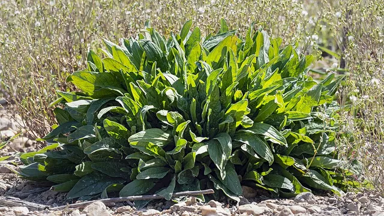
Common sorrelApr–Aug DandelionMar–Oct
DandelionMar–Oct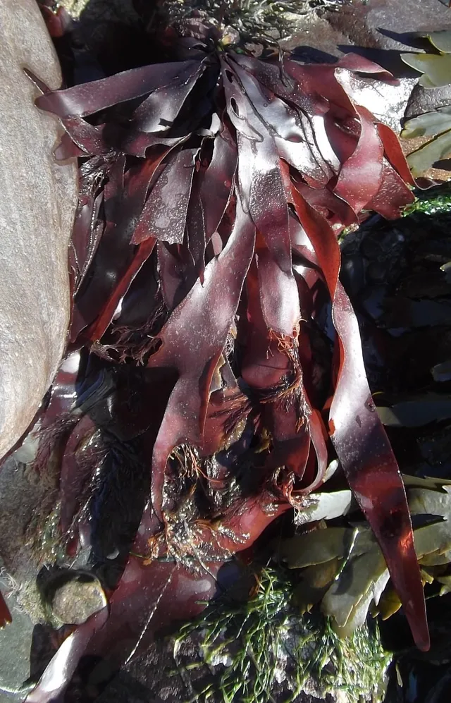
DulseApr–Sep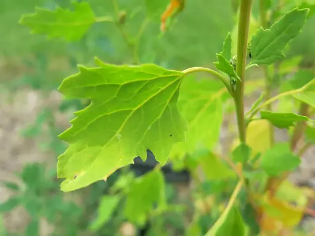
Fat henMay–Sep Garlic mustardMar–Jun
Garlic mustardMar–Jun Ground elderMar–Jun
Ground elderMar–Jun Ground ivyMar–Jun
Ground ivyMar–Jun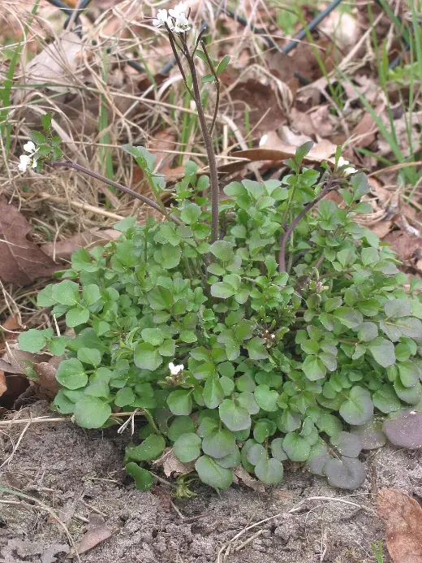
Hairy bittercressJan–Dec LaverOct–Apr
LaverOct–Apr Marsh samphireJun–Aug
Marsh samphireJun–Aug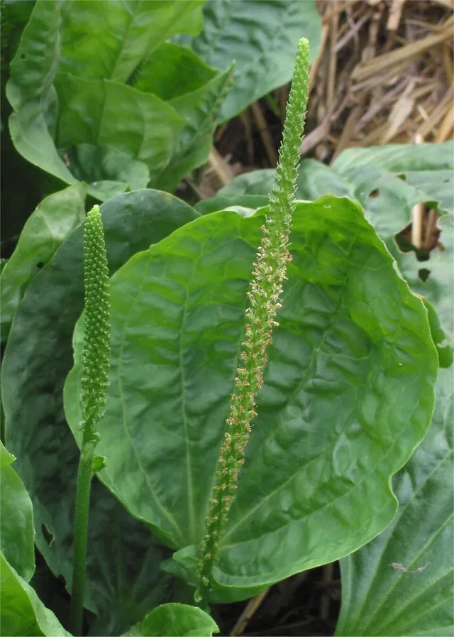
Ribwort plantainApr–Sep Rock samphireMay–Aug
Rock samphireMay–Aug Scurvy grassMar–Jul
Scurvy grassMar–Jul Sea beetMar–Oct
Sea beetMar–Oct Sea lettuceApr–Sep
Sea lettuceApr–Sep Sea plantainApr–Aug
Sea plantainApr–Aug Sea purslaneApr–Oct
Sea purslaneApr–Oct Sea rocketJun–Sep
Sea rocketJun–Sep Spruce tipsMay–Jun
Spruce tipsMay–Jun Stinging nettleMar–Jun
Stinging nettleMar–Jun Sugar kelpMar–Jun
Sugar kelpMar–Jun Three-cornered leekFeb–May
Three-cornered leekFeb–May WatercressMar–Oct
WatercressMar–Oct White and red deadnettleMar–Sep
White and red deadnettleMar–Sep Wild garlicMar–May
Wild garlicMar–May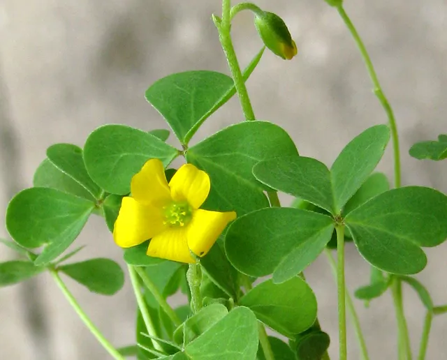
Wood sorrelApr–Sep
Fruit & berries
 BilberryJul–Aug
BilberryJul–Aug BlackberryAug–Sep
BlackberryAug–Sep Bog cranberrySep–Oct
Bog cranberrySep–Oct Cherry plumJul–Aug
Cherry plumJul–Aug Crab appleSep–Oct
Crab appleSep–Oct CrowberryAug–Sep
CrowberryAug–Sep ElderberryAug–Sep
ElderberryAug–Sep HawthornSep–Oct
HawthornSep–Oct Juniper berriesSep–Nov
Juniper berriesSep–Nov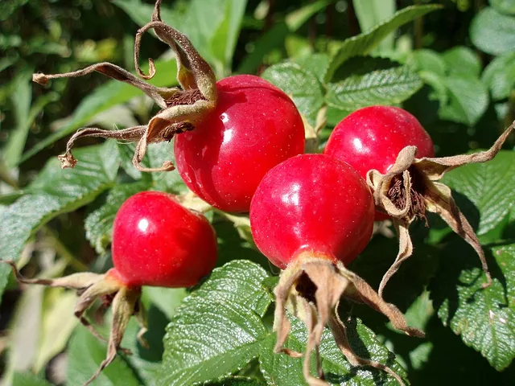
Rose hipsSep–Nov Rowan berriesAug–Oct
Rowan berriesAug–Oct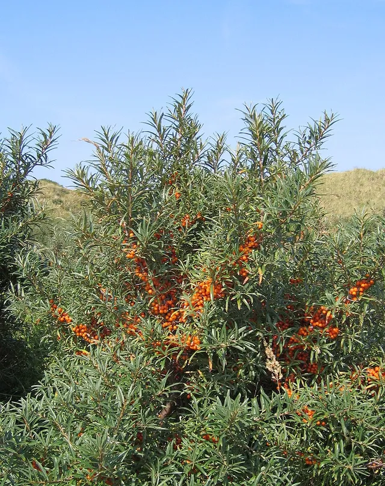
Sea buckthornAug–Oct SloeSep–Nov
SloeSep–Nov Wild blackcurrantJul–Aug
Wild blackcurrantJul–Aug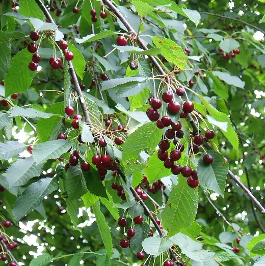
Wild cherryJun–Jul Wild gooseberryJun–Jul
Wild gooseberryJun–Jul Wild raspberryJul–Aug
Wild raspberryJul–Aug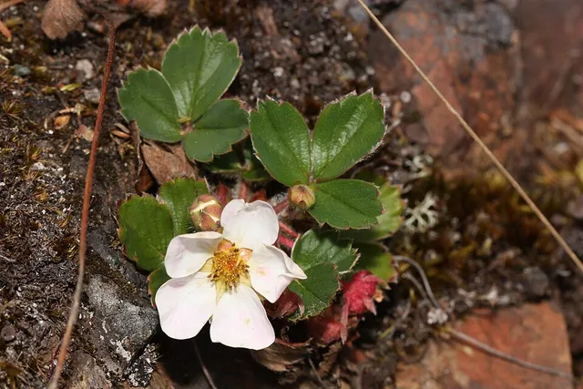
Wild strawberryJun–Jul
Roots & shoots
 Burdock rootApr–Oct
Burdock rootApr–Oct Wood avens rootMar–Oct
Wood avens rootMar–OctSap & starch
 Birch sapMar–Apr
Birch sapMar–AprProtein
 Blue musselsJan–Dec
Blue musselsJan–Dec PeriwinklesJan–Dec
PeriwinklesJan–DecNuts
 HazelnutAug–Oct
HazelnutAug–Oct Sweet chestnutOct–Nov
Sweet chestnutOct–NovFlowers & teas
 Bog myrtleJun–Sep
Bog myrtleJun–Sep ElderflowerMay–Jun
ElderflowerMay–Jun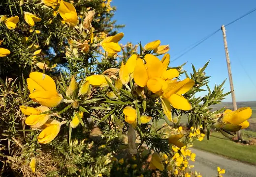
Gorse flowersFeb–May Heather flowersAug–Sep
Heather flowersAug–Sep Lime blossomJun–Jul
Lime blossomJun–Jul MeadowsweetJun–Aug
MeadowsweetJun–Aug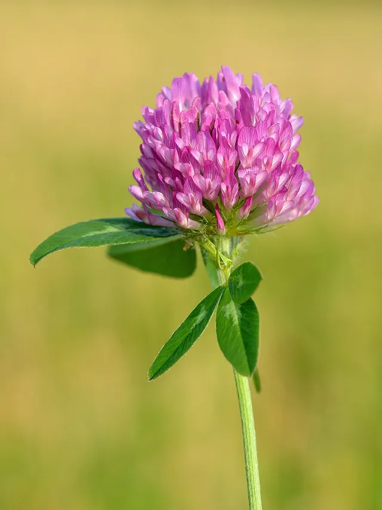
Red cloverMay–Sep Sweet violetFeb–Apr
Sweet violetFeb–Apr Water mintMay–Sep
Water mintMay–Sep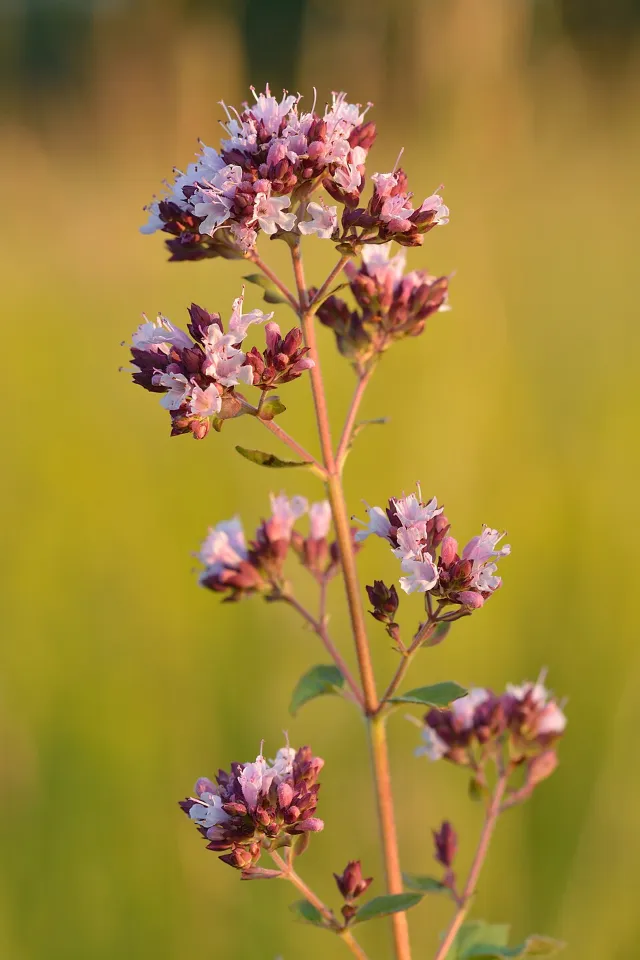
Wild marjoramJun–Sep Wild thymeJun–Aug
Wild thymeJun–Aug YarrowJun–Sep
YarrowJun–Sep
 ChanterelleJul–Oct
ChanterelleJul–Oct Giant puffballJul–Sep
Giant puffballJul–Sep Hedgehog mushroomAug–Nov
Hedgehog mushroomAug–Nov PorciniAug–Oct
PorciniAug–Oct